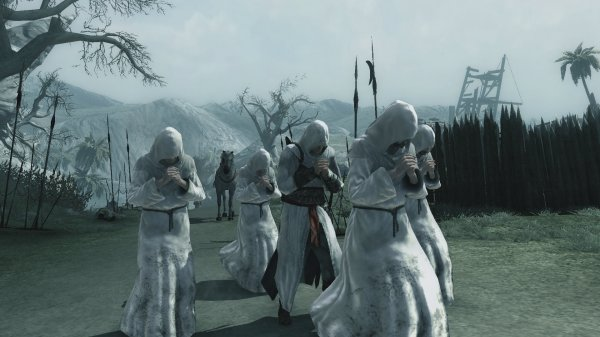
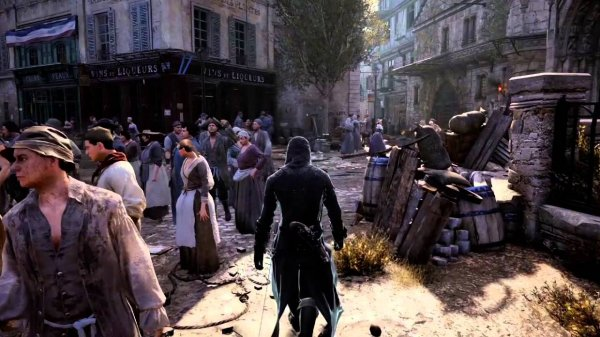
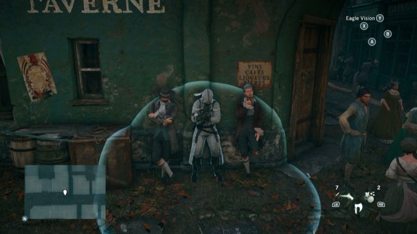
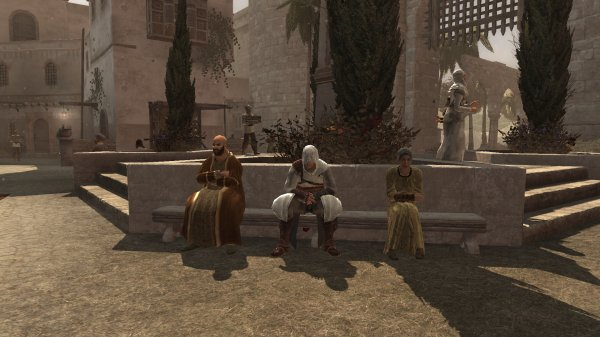
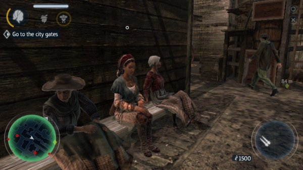
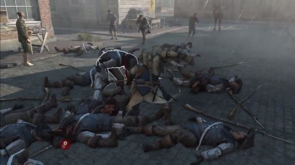

This is my second article in how Assassin's Creed could be more realistic. My first article, "Enemy AI and their respective levels" can be found here.
More or less we all remember during AC:Brotherhood the initiation into the Assassin Order for new assassins. The ceremony came in three parts: the speaking of the Creed, the branding of the initiate's left ring finger, and a Leap of Faith.
Part of the speech included the words "We work in the dark to serve the light. We are Assassins." but let's face it, it's very rare that we play a game where the assassin is true to the Creed.
As I don't like to reinvent the wheel, I will just paste a quote from the Ubisoft forums:
"We *see* a lot of monastic assassins dedicated to the creed, but we always seem to *be* that one person who disobeys it all. Altair ran against the Creed so hard that his only way to come back in and stay there was to rewrite the rulebook, Ezio just stomped all over it before briefly coming to heel and then flying off shouting "bastardo" and napalming the world's biggest port, Connor was too busy trying to influence a revolution to be respectful of the Creed (and besides that, he had no Brotherhood), Aveline rebelled against the assassins and her own family (but on balance, good call), Edward kept one foot out of the whole business and played it like punk rock, Arno caught feelings and alcoholism, and Jacob and Evie ignored the prohibition against working in London and broke it all open in the most public way possible. And then there was Shay, and you know how that went. About the only assassins who we saw trying to stay lowkey were Adewale and Lydia.
Now clearly, one of the reasons why the game is almost never loyal to the Creed is the fun factor. Races are fun, fight clubs are fun, hijacking cargoes is fun and ... ah yes, robes are cool.
But that ain't really working in the dark is it?
So how can the game be epic, fun and interesting yet be loyal to the creed?
The assassin's outfit
Back in the days of Altair he wasn't the only one going around cities dressed up in such a particular outfit so it made sense for guards not to notice him when he was doing "business" in public.
But in the other games in the series such as with Arno in Unity, things started to get a little bit ... akward. He was the only one in a crowd of 200 people wearing a hood and it was obvious who he was and what he was.
|

You wouldn't know who Altair is if he wasn't standing in the middle of the group |

So conspicuous - Only one person is wearing a hood |
I admit it, if you're on the move you're not THAT conspicuous but when blending? You are, and make no mistake, I love the blending opportunities available to you such as sitting on a bench or folding your arms and dropping your head to stand out less. But I find it funny that a guard seeing something like this doesn't realise that the one in the middle is the assassin that has been causing havoc a few second earlier:
Just stand against a wall and you won't be noticed
Now according to the Wikia, Arno could customize his robes to appear plainer and thereby increase the amount of time it took for guards to notice him.
This is interesting, I admit I never realised it worked like that, most probably because I very rarely customised Arno in respect to his outfit. But this is more or less what I'm looking at when the assassin is in a public area: a different outfit.
Now I know what you're thinking, "No! They removed the hood in Syndicate and I almost died, you're now suggesting to remove the trademark robe, no way!"
Well, not really.
To start with, there would be no need to change things if the game reflected one of the early Brotherhood trailers - https://www.youtube.com/watch?v=753327AMNIM - where the message an assassin sends is "Here I am, come get me", but you either want to be a superhero or else you want to respect the Creed and blend with the crowd properly.
And if it has to be the latter, I believe the assassin should blend with the crowd in its truest sense, by having two different outfits, the regular one used in (side/main) missions and a more civilian-like outfit for when you have to investigate areas or simply collect information requiring no or little combat at all such as tailing or eavesdropping on a conversation.
Now remember, with whatever solution I come up with I always try not to force it on the player. So granted, nothing would stop you from putting on the regular outfit to go in a public area but you would have to accept that guards will spot you easier when you blend.
It's also fair to say that the assassin would not be able to carry all his weaponary when not equipped with the assassin outfit but one, he wouldn't need them and two, crowd blending would now make sense.
You may ask, if you're dressed more or less like all other civilians, why would you need to blend with the crowd?
As I said I love crowd blending, I would hate to see it removed and in fact, there's no reason to do it. If you're investigating a restricted area, if you're tailing someone, if you're eavesdropping on a conversation, you could be spotted. This is when crowd blending would come in handy and it would now make sense to sit down on a bench to blend, having someone come racing past you without even noticing that you are there.
|

Regular outfit: White robe? Hood? Must be him! |

Civilian-like outfit: Who is the assassin? |
Build a community
ACIII did a very good job with the Homestead, it gave you that sort of Robin Hood and the Sherwood Forest feel if you know what I mean, an isolated place nobody knows about with no guards at all.
Now think about it: how many times do we visit a shop in an AC game?
An isolated community means that many tasks that we usually do in public such as buying weapons, upgrading the armour and getting healed by a doctor are now done inside the community.
Your first task is to actually find an isolated place on the map where to build your community. The second step is to recruit people in the same way Connor did with the Homestead.
But there's a price to pay for "working in the dark". Weapons, armour, pouches and medicine are not as easily available as they are in shops, you have to craft them.
In fact things could get very interesting here because I'm not suggesting that shops should be removed completely from the game. But if a player decides to purchase items from a shop, the shop owner will alert your enemies who will start keeping tabs on you and if you do this action regularly, they would eventually find and attack your community.
You would be able to defend your territory following an attack but in the end you would have to find another hideout as well as recruiting all the members who were killed in the battle.
In other words, avoid shops as much as you can.
The alert system could also work in respect to the type of outfit you're wearing. The civilian-like outfit will alert them slightly, but if you step inside a shop with your assassin outfit, then the alert system will increase at a very rapid pace.
Things could get even more interesting if the game offers side missions to lower your notoriety. I'm not looking at removing posters, or bribing someone or reprinting posters. It should be a little bit more tougher than that but if you get impatient in respect to waiting for items to be crafted, you can buy them in the same way you do today but then you would have to complete a side mission to lower your notoriety and avoid your community being attacked.
Body disposal
Having just played AC3 recently, at one stage I ended up with more than 20 guards lying on the floor dead. Fellow guards passing by were alerted and panicked a little but it didn't take them long to go back to their usual patroling routine.
In Unity it's more shocking - they shrug their shoulders and go on with their business.
Carnage!
A dead body lying around has "I'm here, I killed" written all over it so what I'm suggesting is to dispose of a body as quickly as you can. This could either be done in the same we have been doing it so far, pick the body and throw him in a haystack or river.
But a better, quicker solution, would be to call one of your recruits. Back in the days of AC2 and AC3, we had up to six recruits who could help us during missions. One of their options could be "body dispose", you tag the body, you call the recruit and he will take care of hiding the body.